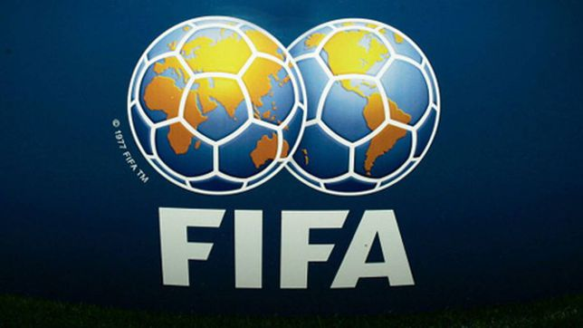

La FIFA existe para gobernar el fútbol y desarrollar el juego en todo el mundo. Desde 2016, la organización ha evolucionado rápidamente hasta convertirse en un organismo que puede servir de manera más eficaz al fútbol en beneficio de todo el mundo.
La nueva FIFA está modernizando el fútbol para que sea global, accesible e inclusivo en todos sus aspectos. No solo en uno o dos continentes, sino en todas partes.
Bajo nuestra visión de hacer que el fútbol sea verdaderamente global, ayudaremos a desarrollar el fútbol en cualquier lugar para que haya al menos 50 selecciones nacionales y 50 clubes de todos los continentes que puedan competir al más alto nivel.
Institucion Educativa Distrital Liceo Samario
Alejandro Alvarado Rueda
Grado: 10 - 02